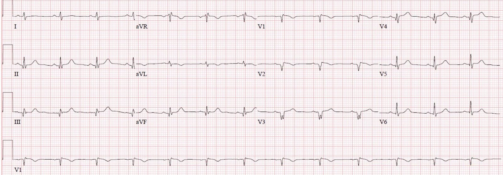
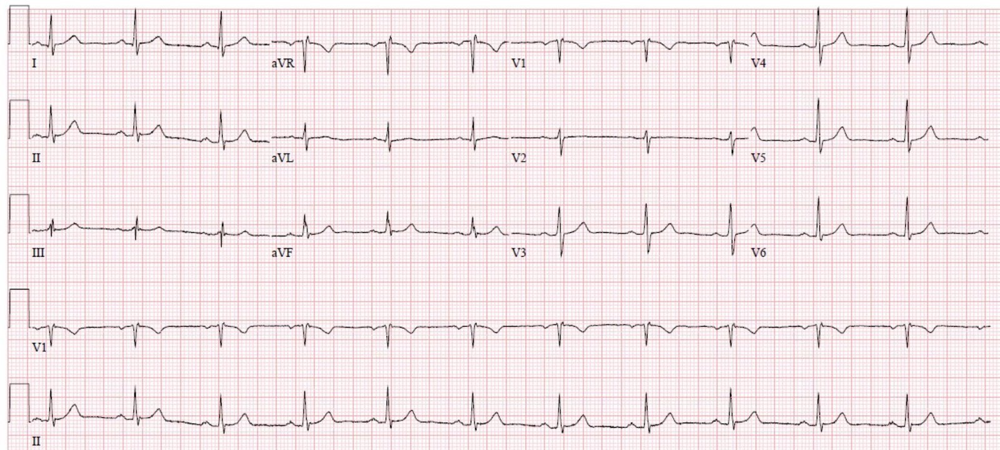
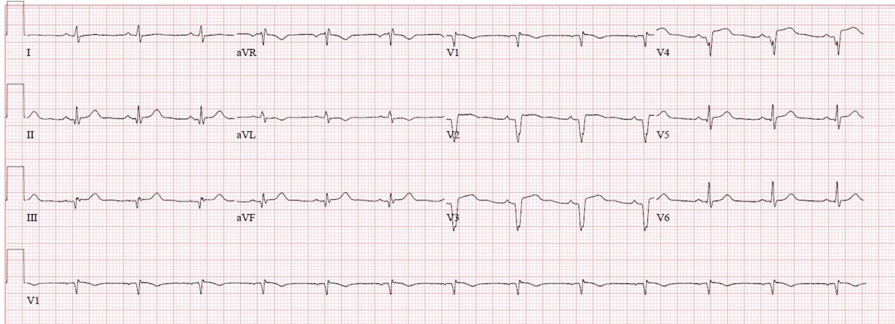
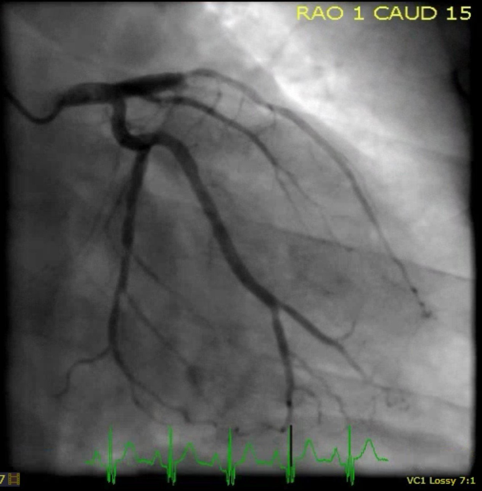
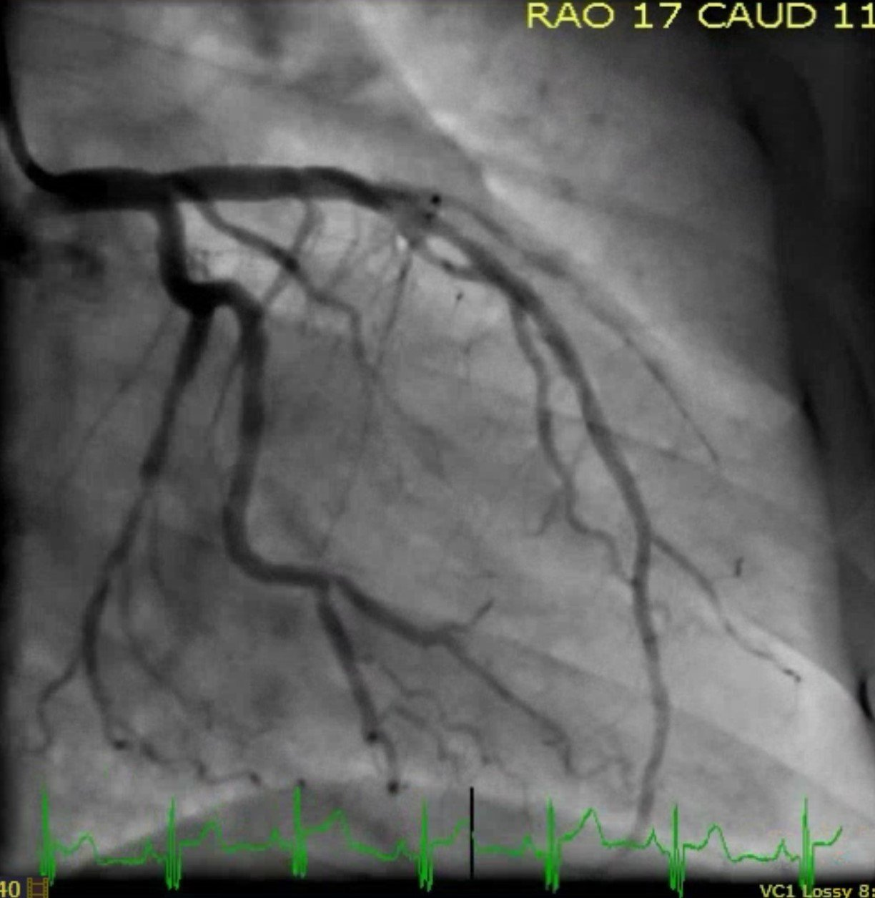
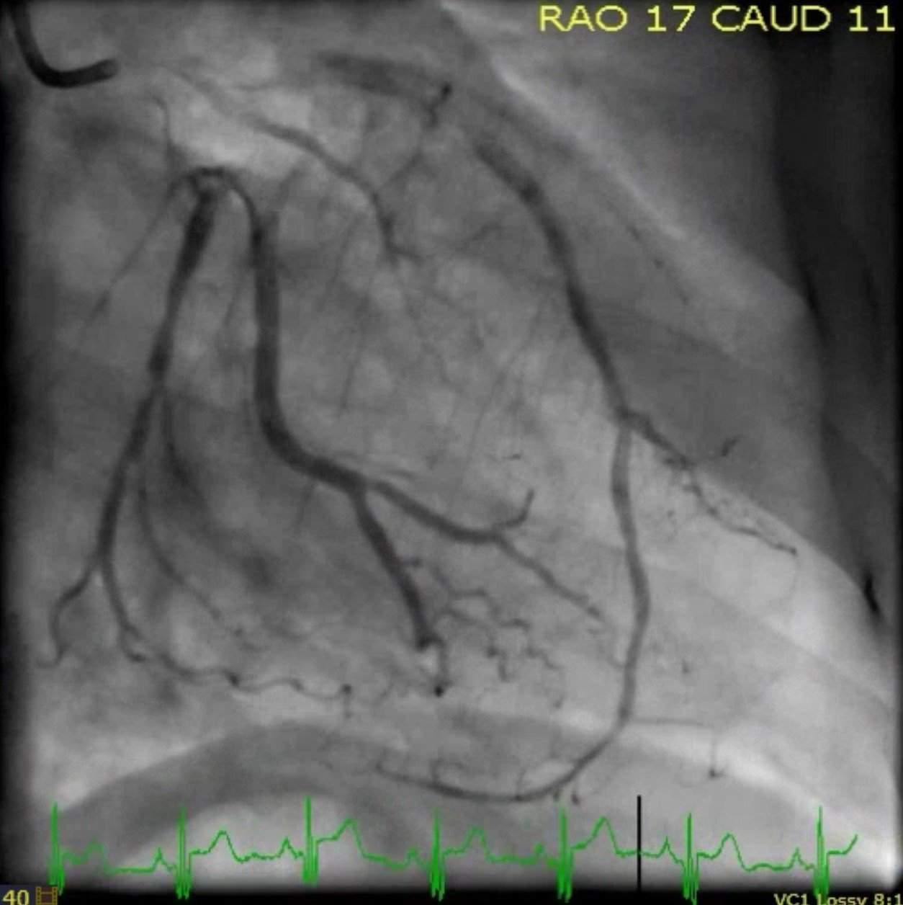
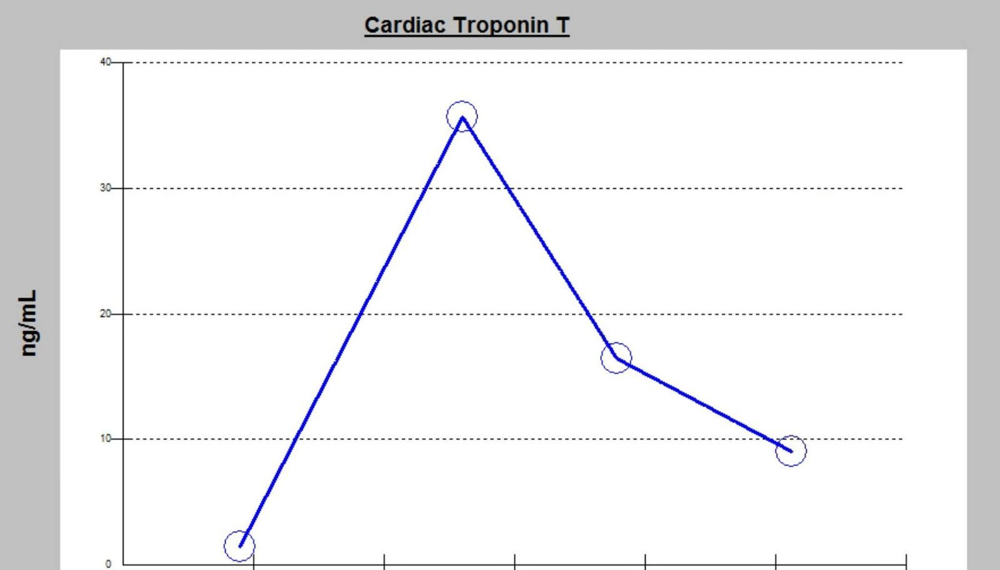
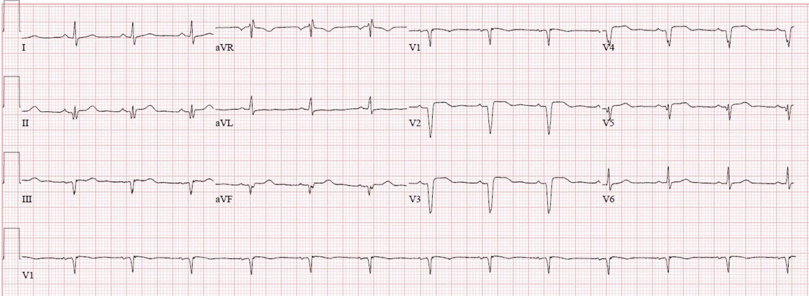
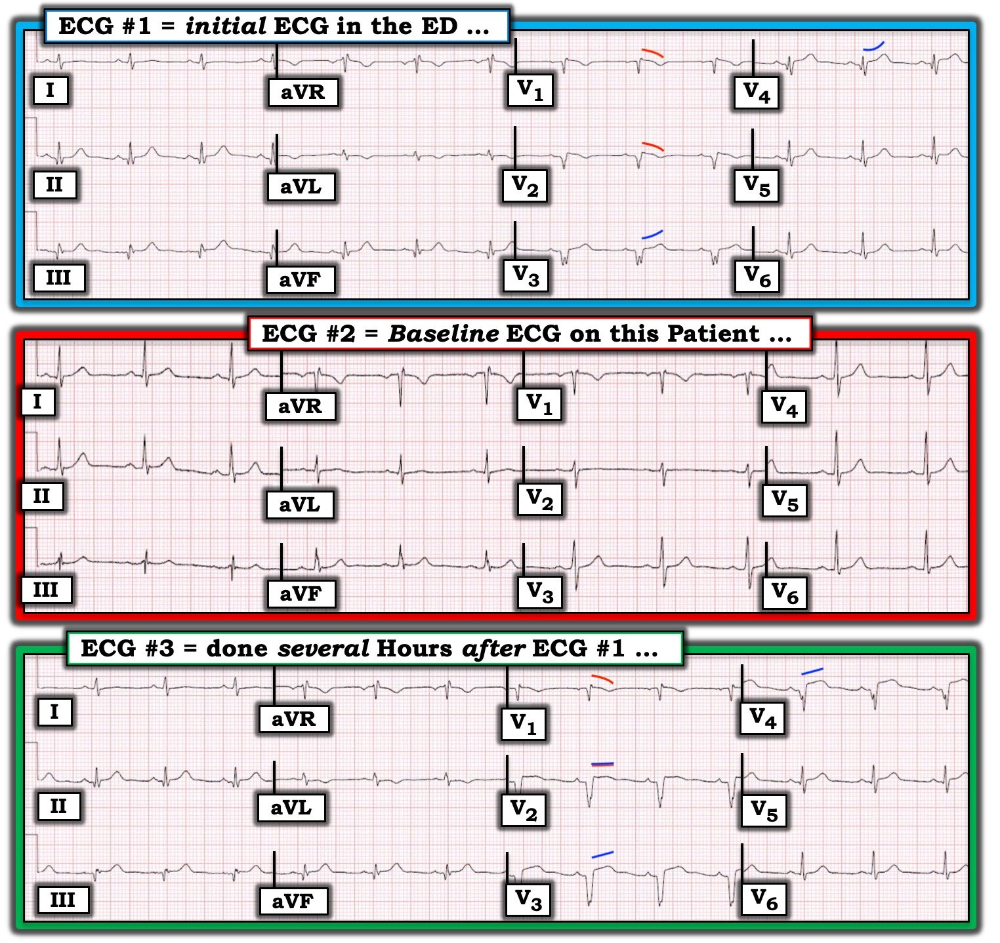

19/07/2019 — Một người đàn ông 40 mấy tuổi đau ngực và ngất sau khi sử dụng cocaine
Bản dịch tiếng Việt của bài "A man in his 40s with chest pain and syncope after cocaine use" – Dr. Smith’s ECG Blog. Giữ nguyên toàn bộ 10 hình ảnh của bản gốc.
Bài viết của Pendell Meyers, Steve Smith biên tập
Một người đàn ông đầu độ tuổi 40, tiền sử nhồi máu cơ tim đã làm PCI, đến viện vì đau ngực phía trước hai bên, mô tả là cảm giác nóng rát kèm ợ hơi, không lan, từ tối hôm qua, bắt đầu khoảng 11 giờ đêm (khoảng 11 giờ trước). Anh cũng kể có một cơn ngất ngay trước khi khởi phát triệu chứng. Anh đã sử dụng cocaine khoảng 20 phút trước khi khởi phát triệu chứng.
Lúc đến khoa cấp cứu (ED), bệnh nhân vẫn còn đang đau.
Đây là điện tâm đồ lúc phân loại (triage) của bệnh nhân:


Có sẵn điện tâm đồ nền của bệnh nhân trong hồ sơ:


–Nhịp xoang
–ST chênh lên (STE) kín đáo ở V1-V5, II, III và aVF
–Sóng Q ở V1-V5, cũng như ở II, III và aVF, phải được coi là mới cho đến khi chứng minh được điều ngược lại
–Có thể có diện tích dưới sóng T lớn (nghi sóng T tối cấp) ở V4, II, III và aVF, kèm sóng T âm soi gương ở aVL
–Các sóng Q này đã hình thành đầy đủ đến mức trông như một nhồi máu cơ tim gần như đã hoàn tất, ở giai đoạn mà nhiều khả năng toàn bộ ST chênh lên đã hồi phục. STE xuất hiện chủ yếu ở vùng cơ tim còn sống đang thiếu máu cục bộ; STE tồn tại dai dẳng sau khi nhồi máu đã hoàn tất là dấu hiệu xấu và báo trước sự hình thành phình thành tim.
–Ngoài ra còn có một hình thái thú vị giống Brugada ở V1 (cũng giống tăng kali máu, tình trạng đôi khi bắt chước Brugada). Hình thái này có thể do cocaine gây ra hoặc liên quan đến cocaine:
A Patient with Cocaine Chest Pain and Prehospital Computer interpretation of ***STEMI*** (Một bệnh nhân đau ngực do cocaine và kết quả đọc bằng máy tính trước viện là ***STEMI***)
Đây là OMI thành trước, thành bên và thành dưới cho đến khi chứng minh được điều ngược lại. Kiểu phân bố này là điển hình của tắc LAD típ III “vòng qua mỏm” (wraparound).
Nhưng điện tâm đồ này không đạt tiêu chuẩn STEMI và ban đầu đã không được nhận ra. Trong khi phần lớn OMI STEMI âm tính (STEMI(-) OMI) là cấp tính, ca này có thể đã có STE lúc khởi phát hoặc ở giai đoạn sớm hơn trong diễn tiến. Đơn giản là chúng ta sẽ không bao giờ biết được nếu không có điện tâm đồ từ khoảng thời gian đó.
Kết quả troponin T đầu tiên bị chậm trễ vài giờ ở phòng xét nghiệm vì lý do không rõ, và trả về là 1.50 ng/mL (tăng rất cao).
Điều này dẫn đến việc ghi lại điện tâm đồ (chúng tôi không có ghi chép từ thời điểm đó cho biết bệnh nhân còn đau dai dẳng, đau tái phát hay hết đau):


OMI thành trước tiến triển thành nhồi máu cơ tim có sóng Q hoàn toàn, với sóng Q bệnh lý lớn ở V2-V4 kèm STE dai dẳng, nay đã đạt tiêu chuẩn STEMI (sau nhồi máu toàn bộ bề dày thành/choáng cơ tim).
Lúc này phòng thông tim (cath lab) mới được kích hoạt.
Bệnh nhân được phát hiện tắc 100% LAD đoạn giữa. Đã tiến hành lấy huyết khối, sau đó đặt stent, cải thiện từ dòng chảy TIMI 0 lên dòng chảy TIMI 3.
Trước PCI:


Sau PCI:


Ở góc chụp này có thể thấy mức độ “vòng qua mỏm” (wraparound) của LAD đoạn xa:


Troponin T đỉnh là 35.70 (nhồi máu cơ tim rất lớn, trong 3 năm tôi làm việc ở đây hiếm có người sống sót ở mức này).


Siêu âm tim cho thấy EF 30% với rối loạn vận động thành ở thành trước, vách, mỏm và thành dưới.
Điện tâm đồ sau thông tim:


STE tiếp tục tồn tại kèm sóng Q thành trước (hình thái phình thất trái), cùng với troponin cực kỳ cao, nhiều khả năng cho thấy nhồi máu cơ tim toàn bộ bề dày thành không hồi phục (chứ không phải choáng cơ tim), và là những đặc điểm nguy cơ cao dẫn đến phình thất trái. Troponin cực kỳ cao và bằng chứng điện tâm đồ về hình thái phình thất trái (LVA) là những đặc điểm rất đáng lo ngại về lâu dài đối với bệnh suất và tử suất về sau.
Thật đáng kinh ngạc, bệnh nhân không gặp biến chứng nghiêm trọng nào trong thời gian nằm viện. Anh hồi phục và được xuất viện vài ngày sau đó. Hiện chưa rõ kết quả theo dõi lâu dài.
Những điểm cần học:
Ngay cả khi các trường hợp tắc mạch NSTEMI (OMI STEMI âm tính) nhìn chung được chứng minh là có bệnh suất và tử suất thấp hơn một chút so với các trường hợp tắc mạch STEMI (OMI STEMI dương tính), vẫn có nhiều ca như ca này cho thấy một số OMI tồi tệ nhất, lớn nhất có thể không biểu hiện tiêu chuẩn STEMI cho đến khi đã quá muộn, nếu có biểu hiện. Một lần nữa, có thể bệnh nhân này đã có STE rõ ràng ở giai đoạn sớm hơn trong diễn tiến của nhồi máu cơ tim này, nhưng chúng tôi không biết. Điều chúng tôi có thể nói là điện tâm đồ ban đầu của anh chắc chắn đã có giá trị chẩn đoán và sự chậm trễ nhiều giờ lẽ ra có thể được cải thiện.
Tắc LAD típ 3 vòng qua mỏm gây STE ở nhiều chuyển đạo, bao gồm các vùng phân bố trước, bên và dưới. Đây là ngoại lệ quan trọng nhất đối với điều được dạy kinh điển là “STE lan tỏa không kèm chênh xuống soi gương thì ít khả năng là hội chứng vành cấp (ACS), nhiều khả năng là viêm màng ngoài tim hơn”. Luôn ghi nhớ khả năng STE lan tỏa (và các dấu hiệu OMI khác) là do LAD típ 3.

===================================
Bình luận của KEN GRAUER, MD (19/7/2019):
===================================
Tôi bị cuốn hút bởi thử thách về đối chiếu lâm sàng mà các điện tâm đồ trong ca này đặt ra. Bệnh nhân là một người đàn ông 40 mấy tuổi có tiền sử từng nhồi máu cơ tim (đã làm PCI) — đến khoa cấp cứu vì đau ngực mới xuất hiện bắt đầu từ ~11 giờ trước đó. Điện tâm đồ ban đầu tại khoa cấp cứu ( = Điện tâm đồ #1) được trình bày ở Hình 1. Bệnh nhân vẫn đang còn đau ngực vào thời điểm ghi điện tâm đồ #1.
- Đã tìm được một bản ghi nền của bệnh nhân này ( = Điện tâm đồ #2).
- Vài giờ sau, một điện tâm đồ theo dõi được ghi tại khoa cấp cứu, vì kết quả troponin thứ 1 trả về tăng đáng kể ( = Điện tâm đồ #3).


THỬ THÁCH: BẠN đã đọc điện tâm đồ #1 như thế nào trước khi xem điện tâm đồ #2?
- Như chúng ta sớm được biết trong ca này — bệnh nhân đã bị một STEMI mới. Thông tim (được thực hiện ngay sau điện tâm đồ #3) cho chúng ta biết STEMI này là hậu quả của tắc 100% LAD đoạn giữa (LAD vòng qua mỏm). Nhưng cách TỐT NHẤT để nâng cao kỹ năng đọc điện tâm đồ của mình là luôn luôn đọc bản ghi ban đầu trong bối cảnh bệnh sử lâm sàng ngắn gọn được cung cấp (mà trong ca này là đau ngực mới xuất hiện bắt đầu từ 11 giờ trước đó).
- Hãy cố gắng đọc điện tâm đồ ban đầu này trước khi xem các thông tin bổ sung. SAU ĐÓ mới tìm các bản ghi cũ trong hồ sơ bệnh nhân, các điện tâm đồ ghi lại, kết quả troponin và siêu âm tim + diễn biến lâm sàng của bệnh nhân. Trình tự đánh giá này sẽ không làm bạn chậm lại — và đây là cách TỐT NHẤT để “trưởng thành” một cách tối ưu thành người đọc điện tâm đồ sắc sảo.
SUY NGHĨ CỦA TÔI về Điện tâm đồ #1 (được xác định TRƯỚC KHI tôi xem điện tâm đồ #2):
Hãy nhớ Bệnh sử = một người đàn ông 40 mấy tuổi đã biết từng nhồi máu cơ tim (đã làm PCI) — đến khoa cấp cứu vì đau ngực mới xuất hiện bắt đầu từ ~11 giờ trước khi ghi điện tâm đồ #1.
Phân tích mô tả Điện tâm đồ #1:
- Nhịp xoang, khá đều, tần số ~80-85 lần/phút. Các khoảng PR, QRS và QTc đều bình thường. Trục mặt phẳng trán có vẻ bình thường — dù khó tính trục vì các phức bộ gần như đẳng điện ở 4 trong 6 chuyển đạo chi (các chuyển đạo I, III, aVL và aVF). Không có lớn buồng tim.
Về Thay đổi Q–R–S–T của phức bộ:
- Có nhiều sóng Q bất thường trên điện tâm đồ #1. Dù kích thước nhỏ — các sóng Q thành dưới có nhiều khả năng là có ý nghĩa (tức là chỉ điểm nhồi máu thành dưới vào một thời điểm nào đó) — vì so với kích thước QRS, các sóng Q thành dưới vừa lớn vừa tương đối rộng. Có sóng Q lớn (so với kích thước phức bộ QRS) ở các chuyển đạo V1, V2 và V3. Có phân mảnh rõ rệt của phức bộ QS ở chuyển đạo V3.
- ĐIỂM THEN CHỐT (PEARL): Dù sóng Q ở các chuyển đạo V4, V5 và V6 trở nên nhỏ và hẹp hơn nhiều — việc sóng Q ở chuyển đạo V4 rõ ràng lớn hơn sóng Q ở V5 và V6 cho chúng ta biết sóng Q ở V4 là có ý nghĩa (tức là một phần của quá trình nhồi máu mà các sóng Q ở V1-V3 gợi ý). Với sóng q “vách” bình thường — diễn tiến xảy ra theo chiều ngược lại (tức là sóng q vách hiếm gặp ở chuyển đạo V4 — và nếu có, sóng Q vách ở V4 phải nhỏ hơn sóng Q vách ở V5 và V6).
- Vùng Chuyển tiếp (tức là nơi sóng R trở nên cao hơn độ sâu của sóng S) hơi muộn trên điện tâm đồ #1 (tức là xảy ra giữa chuyển đạo V4 và V5).
Về — Thay đổi ST-T (sóng T):
- Như Dr. Meyers và Dr. Smith đã nhận xét — có một hình thái giống Brugada thú vị của ST-T ở các chuyển đạo V1 và V2 (đường ĐỎ cong lồi xuống ở V1,V2 của điện tâm đồ #1). Không đủ ST chênh lên để xếp đây là hình ảnh Brugada típ 1 — nhưng, ý nghĩa lâm sàng của việc nhận ra hình ảnh này là ST chênh lên nhẹ ở các chuyển đạo này nhiều khả năng phản ánh một “kiểu hình” Brugada hơn là nhồi máu vách cấp.
(Để tìm hiểu thêm về cách đánh giá hình ảnh điện tâm đồ Brugada — BẤM VÀO ĐÂY để mở liên kết tới video 29 phút của tôi về chủ đề này. Nếu bạn bấm SHOW MORE bên dưới video trên trang YouTube — bạn sẽ thấy Mục lục có liên kết tới mọi nội dung trong video).
- Quay lại điện tâm đồ #1: Như Dr. Meyers và Dr. Smith đã nêu — có ST chênh lên kín đáo nhưng có thật ở nhiều chuyển đạo. Tuy vậy — các đoạn ST chênh lên gần như nằm ngang ở các chuyển đạo thành dưới trông kém cấp tính hơn so với điều người ta có thể chờ đợi. Các đoạn ST chênh lên này đi kèm sóng T thành dưới nổi bật — và, sóng T đảo ngược soi gương (dù nông) ở chuyển đạo aVL.
- Tương tự, ST chênh lên kín đáo nhưng có thật ở các chuyển đạo V3, V4 và V5 có hình dạng trông kém cấp tính hơn so với điều người ta có thể chờ đợi (lõm nhẹ hướng lên, như gợi ý bởi các đường XANH cong ở V3 và V4 của điện tâm đồ #1).
- LƯU Ý: Hình dạng khác nhau của các đoạn ST chênh lên nhẹ ở chuyển đạo V1,V2 của điện tâm đồ #1 (các đường ĐỎ cong xuống) — so với các đoạn ST lõm hướng lên ở chuyển đạo V3 đến V6 (các đường XANH cong LÊN) — theo tôi, càng ủng hộ thêm rằng đây là 2 quá trình khác nhau (tức là kiểu hình giống Brugada đối với ST-T ở chuyển đạo V1,V2— so với tổn thương cấp gần đây đối với các đoạn ST chênh lên ở chuyển đạo V3 đến V6).
NHẬN ĐỊNH LÂM SÀNG: Trước khi tìm được bản ghi nền của bệnh nhân này — tôi hẳn đã rất khó biết được bao nhiêu phần trong những gì tôi thấy trên điện tâm đồ #1 có thể là do lần nhồi máu cơ tim trước đây của bệnh nhân — so với những gì có thể đã xuất hiện kể từ lúc khởi phát đau ngực 11 giờ trước đó. Đây chính là THỬ THÁCH mà tôi đã đặt ra cho bạn ở trên! Nhận thức rằng KHÔNG có cách nào để chắc chắn — đây là những suy nghĩ của tôi:
- Những gì chúng ta thấy trên điện tâm đồ #1 có lẽ không chỉ vừa mới xảy ra. Dù sóng Q mới có thể xuất hiện chỉ sau 1-2 giờ kể từ nhồi máu cấp — tôi nghĩ kích thước và số lượng sóng Q thấy ở đây + sự phân mảnh ở chuyển đạo V3 gợi ý rằng ít nhất một số sóng Q này là hậu quả của lần nhồi máu cơ tim trước đây của bệnh nhân. Từ sóng T nổi bật và ST chênh lên kín đáo mà bệnh nhân biểu hiện trên điện tâm đồ #1, tôi hẳn sẽ đoán — rằng anh đã bị một biến cố cấp vào lúc khởi phát triệu chứng (tức là ~11 giờ trước đó).
- Tuy vậy — vì vẫn còn ST chênh lên trên điện tâm đồ #1, với sóng T thành dưới trông như có thể vẫn còn tối cấp + đau ngực đang tiếp diễn — thông tim càng sớm càng tốt có vẻ là có chỉ định để làm rõ bệnh cảnh lâm sàng.
Vào thời điểm này — Việc tìm được Bản ghi Nền của bệnh nhân ( = Điện tâm đồ #2) hóa ra vô cùng quý giá! Suy nghĩ của tôi khi so sánh điện tâm đồ #2 với điện tâm đồ #1:
- Linh cảm của tôi rằng ít nhất một số sóng Q trên điện tâm đồ #1 là cũ đã sai. Ngoài chuyển đạo V1 — hoàn toàn không có sóng Q nào trên điện tâm đồ #2! Thay vào đó, tăng tiến sóng R trên bản ghi nền trước đây này là bình thường — với sóng R khá cao ngay từ chuyển đạo V3. Điều này có nghĩa là các sóng Q lan rộng trên điện tâm đồ #1 (kể cả sự phân mảnh ở chuyển đạo V3) là mới kể từ khi ghi điện tâm đồ nền #2. Chúng ta buộc phải cho rằng (cho đến khi chứng minh được điều ngược lại) các dấu hiệu điện tâm đồ này là mới kể từ lúc khởi phát triệu chứng 11 giờ trước đó.
- Hầu như không có ST chênh lên trên điện tâm đồ #2. Nhìn chung, tôi không thấy khác biệt nhiều về hình dạng sóng T giữa điện tâm đồ #1 và điện tâm đồ #2. Điều này khiến tôi không chắc chắn về mức độ cấp tính của ST chênh lên kín đáo nhưng có thật hiện có trên điện tâm đồ #1. Nó đã xuất hiện từ nhiều ngày hay nhiều tuần trước? — hay, vào một lúc nào đó sau khi khởi phát triệu chứng trong khoảng 11 giờ trước khi đến khoa cấp cứu? Tuy vậy — đau ngực dai dẳng + các thay đổi điện tâm đồ xuất hiện giữa điện tâm đồ #1 và 2 hẳn đã là chỉ định thông tim cấp cứu để làm rõ bệnh cảnh lâm sàng.
Có vẻ như — ST chênh lên mới xuất hiện trên điện tâm đồ #1 (so với điện tâm đồ nền) đã không được nhận ra. Vài giờ sau, khi kết quả troponin thứ 1 trả về tăng — Điện tâm đồ #3 được ghi.
- Tôi không thấy thay đổi đáng kể nào về hình dạng ST-T ở các chuyển đạo chi giữa điện tâm đồ #1 và điện tâm đồ #3 được ghi vài giờ sau đó.
- Tuy nhiên – đã có thay đổi rõ rệt về hình dạng ST-T ở các chuyển đạo ngực trên điện tâm đồ #3! Ngay cả khi tính đến thay đổi nhẹ về hình thái và biên độ QRS ở các chuyển đạo ngực giữa (gợi ý có sự khác biệt về vị trí đặt chuyển đạo trước tim) — giờ đây rõ ràng có hiện tượng thẳng đuỗn của đoạn khởi đầu ST (các đường XANH xiên trên điện tâm đồ #3) với ST chênh lên nhiều hơn ở các chuyển đạo V3 và V4.
- Vượt ra ngoài phần cốt lõi: Hình thái giống Brugada ở chuyển đạo V1 của điện tâm đồ #3 trông vẫn giống như trên điện tâm đồ #1 (đường ĐỎ cong xuống). Điều thú vị là hình dạng đoạn ST chênh lên ở chuyển đạo V2 của điện tâm đồ #3 nay biểu hiện hình thái dẹt (đường XANH-ĐỎ), trung gian giữa đường ĐỎ cong ở chuyển đạo V1 — và đường XANH xiên lên ở chuyển đạo V3. Tôi nghi ngờ lý do là có sự “hòa trộn” giữa hiệu ứng đoạn ST giống Brugada tác động lên chuyển đạo V2 — với hiện tượng ST thẳng đuỗn và chênh lên cấp tính hiện có ở các chuyển đạo V2, V3 và V4 do STEMI thành trước đang tiến triển.
- Tổng hợp lại tất cả — Mặc dù có tiền sử nhồi máu cơ tim trước đây (đã làm PCI) — bản ghi nền ( = điện tâm đồ #2) cho thấy không có bằng chứng nhồi máu cũ. Từ thông tin hiện có — không thể biết liệu một biến cố thứ 2 có xảy ra vào lúc nào đó sau khi ghi điện tâm đồ #2 — nhưng trước khi khởi phát các triệu chứng liên quan đến lần nhập viện này hay không. Điều có thể nói được — là bất kể đây là biến cố tim thứ 2 hay thứ 3, chắc chắn có bằng chứng điện tâm đồ và troponin về một STEMI cấp đang tiến triển trong khoảng thời gian từ lúc ghi điện tâm đồ #1 đến #3.
Điểm cần học cuối cùng: Xem xét kỹ lưỡng các bản ghi liên tiếp + đối chiếu lâm sàng có thể giúp hồi cứu suy luận ra trình tự thời gian của các biến cố.
- “T.B.” (P.S.) cuối cùng— Nếu điện tâm đồ duy nhất được trình bày cho chúng ta là điện tâm đồ #3 trong Hình 1 — sẽ rất khó, chỉ dựa vào điện tâm đồ này, để phân biệt giữa nhồi máu cơ tim cũ + phình thất trái — với — nhồi máu cơ tim trước-dưới lan rộng + một biến cố cấp đang tiến triển.
Chúng tôi xin CẢM ƠN Dr. Meyers và Dr. Smith vì ca bệnh đầy thử thách này!